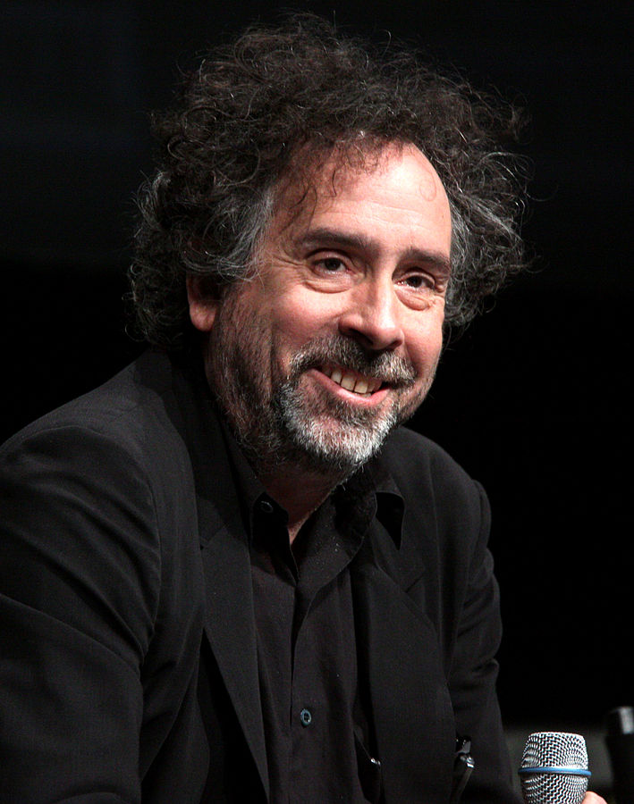

Timothy Walter Burton
Timothy Walter Burton[1] (/ˈbɜːrtən/; born August 25, 1958) is an American film director, producer, artist, writer and animator. He is known for his dark, gothic, eccentric and quirky fantasy films such as Beetlejuice (1988), Edward Scissorhands (1990), the animated musical The Nightmare Before Christmas (1993), the biographical film Ed Wood (1994), the horror fantasy Sleepy Hollow (1999), and later efforts such as Corpse Bride (2005), Sweeney Todd: The Demon Barber of Fleet Street (2007), Dark Shadows (2012) and Frankenweenie (2012). He is also known for blockbusters such as the adventure comedy Pee-wee's Big Adventure (1985), the superhero films Batman (1989) and its first sequel Batman Returns (1992), the sci-fi film Planet of the Apes (2001), the fantasy drama Big Fish (2003), the musical adventure film Charlie and the Chocolate Factory (2005) and the fantasy film Alice in Wonderland (2010), which garnered a worldwide gross of over $1 billion. Burton has worked repeatedly with Johnny Depp, who has become a close friend of Burton since their first film together. He has also worked with musician Danny Elfman, who has composed scores for all but three of the films Burton has directed. Actress Helena Bonham Carter, Burton's former domestic partner, has appeared in many of his films. He also wrote and illustrated the poetry book The Melancholy Death of Oyster Boy & Other Stories, published in 1997 by Faber and Faber, and a compilation of his drawings, sketches and other artwork, entitled The Art of Tim Burton, was released in 2009. A follow-up to The Art of Tim Burton, entitled The Napkin Art of Tim Burton: Things You Think About in a Bar, containing sketches made by Burton in napkins at bars and restaurants he occasionally visits, was released in 2015. Both compilations were published by Steeles Publishing.